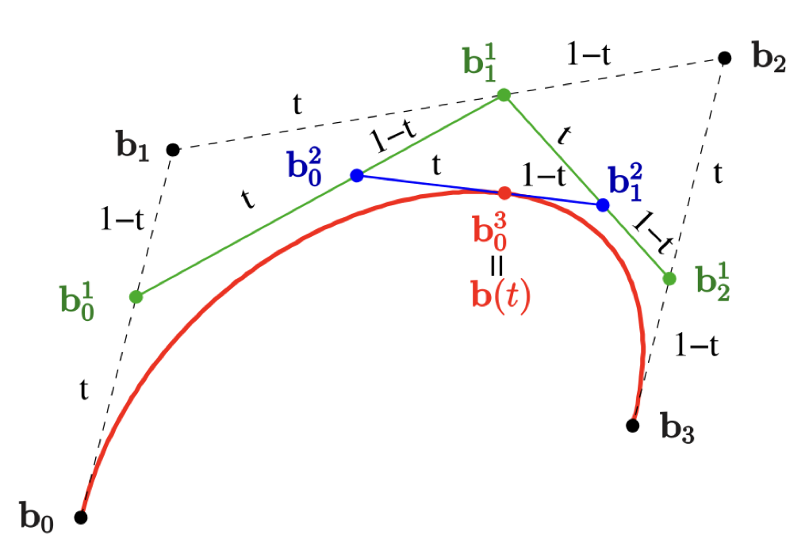

Für unsere Bezierkurve benötigen wir erstmal vier Kontrollpunkte.
Probiere doch einmal, sie zu bewegen, indem du auf einen Punkt klickst.
Für unsere Bezierkurve benötigen wir erstmal vier Kontrollpunkte.
Probiere doch einmal, sie zu bewegen, indem du auf einen Punkt klickst.
Wenn wir den Casteljau-Algoritmus auf unsere Kontrollpunkte anwenden entsteht eine Bezierkurve.
Mit dem de Casteljau-Algorithmus lässt sich eine Bezierkurve zu bestimmten Zeitpunkte auswerten.
Lass uns diesen nun Schritt für Schritt durchgehen!
Wir verbinden unsere Kontrollpunkte und können uns nun zu jedem Zeitpunkt auf der Linien bewegen.
Diesen Vorgang nennt man lineare Interpolation.
Wenn du den Slider veränderst bewegen sich die Punkte auf den Verbindungslinien.
Wenn wir die drei neuen Punkte wieder verbinden, können wir wieder in Abhängigkeit von t zwischen den Punkten interpolieren.
Wir können ein letztes Mal die Punkte verbinden und einen neuen von t abhängigen Punkt setzen.
Dieser Punkt liegt auf der Bezierkurve.
Wir können nun in Abhängigkeit von der Zeit die Bezierkurve der Kontrollpunkte zeichnen.